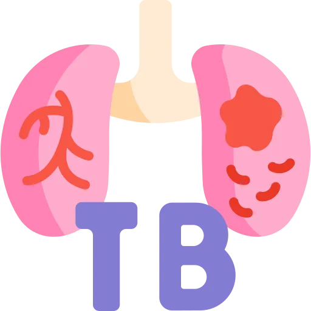

One word decides whether the patient needs a negative pressure room. Three numbers decide whether a skin test is positive. Four drugs, each with the one side effect you are watching for.
Tuberculosis is a topic of small precise distinctions. Miss one word in the stem and every answer changes.
Points get lost here in three predictable ways.
A skin test is read by feeling, not by looking. You measure induration. That is the raised hardened area. Redness on its own is not a positive result.
Then there are three different cut-offs. Which one applies depends on who the patient is. A 6 mm induration is positive in an HIV-positive patient. In a healthy one it is negative.
Latent TB is not contagious. Not slightly, not a little. A patient with latent TB needs no isolation at all.
Active pulmonary TB is contagious with every cough. The room goes on before the culture comes back. Put a latent patient in a negative pressure room, or leave an active one on a ward, and you have the discrimination backwards.
Nobody asks what rifampin does to bacterial RNA. They ask what you tell the patient. And what makes you stop the drug.
Three of the four are hepatotoxic. One turns body fluids orange. One causes neuropathy unless you give B6. One takes vision. That is the whole drug section.
For every drug below, you should be able to say four things with the book closed: what it is called, the side effect you are watching for, what you monitor, and the teaching point.
If you cannot say all four out loud, you do not know it yet. Familiarity is not recall.
| Drug | The side effect that matters | What you monitor | The teaching point |
|---|---|---|---|
| Rifampin | Hepatotoxicity. Orange body fluids. Many drug interactions. | Liver function. The full medication list. | Orange urine, tears and sweat are expected. It also weakens oral contraceptives, so use another method. |
| Isoniazid | Hepatotoxicity and peripheral neuropathy. | Liver function. Ask about tingling in the hands and feet. | Take pyridoxine, vitamin B6, with it. Avoid alcohol. |
| Pyrazinamide | Hepatotoxicity, raised uric acid, joint pain. | Liver function and uric acid. | Only used for the first 2 months. Report new joint pain. |
| Ethambutol | Optic neuritis. | Visual acuity and colour vision, at baseline then monthly. | Report blurred vision or trouble telling red from green immediately. |
Write these four rows on one index card, by hand. RIP are the liver. E is the eye. Rifampin is orange. Isoniazid needs B6. That card is most of the drug questions.
Tuberculosis is caused by Mycobacterium tuberculosis. It is a slow-growing acid-fast bacillus with a waxy cell wall. That wall is why it survives. It is also why treatment takes months rather than days.
TB spreads in droplet nuclei of 1 to 5 micrometres. They stay suspended in the air for hours. They drift on air currents across a room.
A single cough produces about 3,000 of them. They are generated by coughing, sneezing, speaking and singing.
So a surgical mask and a normal room are not enough. These particles do not fall to the floor.
TB lands in the alveoli. The droplet nuclei are small enough to bypass the mucociliary escalator entirely.
It favours the upper lobes, particularly the apical and posterior segments. Three reasons, all pointing the same way. Higher oxygen tension, and TB is an obligate aerobe. Less lymphatic drainage. Less blood flow, so fewer immune cells arrive.
| Your defence | Where | How TB gets past it |
|---|---|---|
| Mucociliary escalator | Upper airways | The droplet nuclei are too small to be caught |
| Alveolar macrophages | Alveoli | TB survives and multiplies inside the macrophage |
| Cell-mediated immunity | Systemic | Granulomas wall the infection off without killing all of it |
| Category | Who | What it means for you |
|---|---|---|
| Exposure | Close contacts, healthcare workers, shelters, prisons | These groups get screened regularly |
| Immunocompromised | HIV, immunosuppressants, transplant, malignancy | Much higher risk of active disease |
| Medical conditions | Diabetes, silicosis, chronic kidney disease, malnutrition | Impaired immunity raises the risk |
| Demographics | Born in a high-prevalence country, elderly, very young | Consider reactivation in an older patient |
| Substance use | Alcohol, injected drugs, smoking | Impairs immunity and often comes with unstable housing |
An HIV-positive patient is 20 to 30 times more likely to develop active TB. It is a leading cause of death in people with HIV.
Test for one whenever you find the other. Expect TB to look different here. Lower lung involvement and extrapulmonary sites are both more common.
Discrimination axis: is the patient contagious.
This decides the room. It decides the drugs, the length of treatment, and whether public health gets a call. Nothing else in the topic matters more.
Treatment: usually a single drug, for 3 to 9 months depending on the regimen. The aim is to stop it ever waking up.
Isolation: none.
Treatment: four drugs, 6 to 9 months minimum.
Isolation: airborne, immediately, before anything is confirmed.
The sputum. A positive skin test tells you the person has met TB. Nothing more than that.
What separates latent from active is whether bacteria are being coughed out. That shows up three ways. Symptoms, an abnormal x-ray, and a positive sputum.
Positive test plus symptoms plus abnormal x-ray means active, and the room goes on first.
Discrimination axis: first infection, or an old one waking up.
Primary sits low and happens in children. Reactivation returns to the upper lobes. It happens in adults whose immunity has slipped. Cavitation on the film means high bacterial load and high infectivity.
Active TB builds over weeks to months. The slowness is itself a clue. A bacterial pneumonia arrives in days.
| Symptom | What it is like | Why it happens |
|---|---|---|
| Persistent cough | 3 weeks or more. Dry at first, then productive | Inflammation and tissue destruction in the airways |
| Hemoptysis | Blood-tinged sputum, sometimes frank blood | Vessels eroding inside cavitary lesions |
| Night sweats | Drenching, enough to need a change of clothes and sheets | Immune response and cytokine release |
| Fever | Low grade, often in the afternoon or evening | Inflammatory response to chronic infection |
| Weight loss | Unintentional. TB was once called consumption for this | Raised metabolic demand and a lost appetite |
| Fatigue | Progressive weakness | Chronic infection and anemia of chronic disease |
| Chest pain | Pleuritic, worse on breathing in | Pleural involvement |
Suspicion is enough to start airborne precautions. You do not wait for proof.
TB can reach almost any organ. It does so more often in children and in immunocompromised patients.
| Site | Name | What you see |
|---|---|---|
| Lymph nodes | Scrofula, or TB lymphadenitis | Painless swollen cervical nodes that may drain |
| Pleura | TB pleurisy | Pleural effusion and pleuritic chest pain |
| Spine | Pott's disease | Back pain, kyphosis, risk of paraplegia |
| Meninges | TB meningitis | Headache, altered mental status, cranial nerve palsies |
| Kidneys | Genitourinary TB | Sterile pyuria, frequency, hematuria |
| Everywhere | Miliary TB | Tiny lesions like millet seeds throughout the body |
TB meningitis and miliary TB both carry high mortality without prompt treatment.
Miliary TB happens when the bacteria spread through the bloodstream. The film shows diffuse tiny nodules that look like millet seeds. Expect high fever, hepatosplenomegaly and multiple organ dysfunction.
Two kinds of test. Screening tells you the patient has met TB. Confirmation tells you whether it is active now.
| Test | How it works | What you do |
|---|---|---|
| Mantoux TST, the PPD | Intradermal purified protein derivative, read at 48 to 72 hours | Mark the site. Read inside the window or the result is invalid. Measure induration only. |
| IGRA, QuantiFERON or T-SPOT | Blood test measuring interferon-gamma release against TB antigens | One visit, no return trip. Not confused by BCG vaccine, so it is preferred in anyone vaccinated. |
Palpate. You are feeling for the raised hardened area, the induration. Redness alone counts for nothing.
Measure the widest diameter across the forearm, not along it. Record millimetres, not "positive" or "negative", because the same number means different things in different patients.
Read it at 48 to 72 hours. Outside that window the result cannot be used.
Discrimination axis: the same millimetre reading means different things depending on the patient.
| Positive at | In whom |
|---|---|
| 5 mm or more | HIV-positive, close contacts of an active case, immunosuppressed patients, and anyone with chest x-ray changes |
| 10 mm or more | Healthcare workers, high-prevalence populations, people who inject drugs, children under 4 |
| 15 mm or more | People with no known risk factors |
The logic runs backwards from what you might expect. Higher risk means a lower threshold. The cost of missing a case is higher.
False negatives happen with anergy, very recent infection, poor technique, and immunosuppression. So a negative test in a sick immunosuppressed patient rules out nothing.
| Test | What it is for | What you need to know |
|---|---|---|
| Chest x-ray | Find pulmonary abnormality | Upper lobe infiltrates, cavities, hilar adenopathy. It does not confirm TB on its own. |
| Sputum AFB smear | Rapid detection of acid-fast bacilli | Three specimens on separate days. Early morning has the highest yield. Positive means highly infectious. |
| Sputum culture | The gold standard | Takes 2 to 6 weeks to grow. Confirms the species and the drug susceptibility. |
| Nucleic acid amplification | Rapid molecular detection | Results in about 2 hours. Detects rifampin resistance. Used alongside the smear. |
| Drug susceptibility testing | Find resistant strains | Essential before and during treatment. It is what changes the regimen. |
Suspected pulmonary TB gets isolated immediately. Suspicion is the trigger, not confirmation. The culture takes weeks and the patient is coughing now.
Staff wear an N95, because they need filtration and a seal against particles in the air.
The patient wears a surgical mask, because the job there is to catch what they are producing at the source.
Swapping those two is a classic wrong answer. An N95 on a coughing patient is unnecessary. A surgical mask on the nurse is inadequate.
| Criterion | Requirement |
|---|---|
| Treatment | At least 2 weeks of effective anti-TB therapy |
| Clinical picture | Fever resolved and the cough improving |
| Sputum | Three consecutive negative AFB smears, 8 to 24 hours apart |
| Susceptibility | No evidence of drug resistance |
All four, not any one of them. Feeling better is not a criterion.
MDR-TB is resistant to at least isoniazid and rifampin, the two strongest first-line drugs.
These patients stay infectious for longer and stay isolated for longer, until repeated negative smears prove otherwise.
Suspect it in patients from high MDR prevalence areas, anyone previously treated and especially anyone who did not finish, contacts of a known MDR case, and anyone not responding to standard therapy.
Active TB is treated with four drugs at once. The reason is resistance. Any single drug leaves survivors behind. Those survivors become the next infection.
Rifampin, Isoniazid, Pyrazinamide, Ethambutol.
RIP are the three that hit the liver. E is the one that takes the eye.
| Drug | How it works | Main harms | What you do about it |
|---|---|---|---|
| Rifampin | Inhibits RNA synthesis | Hepatotoxicity, orange body fluids, drug interactions | Warn about the orange urine, tears and sweat. Check the whole medication list; it affects oral contraceptives and warfarin. Monitor liver function. |
| Isoniazid | Inhibits cell wall synthesis | Hepatotoxicity, peripheral neuropathy | Give pyridoxine to prevent the neuropathy. Monitor liver function. Avoid alcohol. |
| Pyrazinamide | Works in an acidic environment; mechanism not fully known | Hepatotoxicity, raised uric acid, joint pain | Only used for the first 2 months. Monitor uric acid and liver function. |
| Ethambutol | Inhibits cell wall synthesis | Optic neuritis | Baseline and monthly vision testing. Report blurring or loss of red-green discrimination straight away. |
| Phase | Drugs | Duration |
|---|---|---|
| Initial, or intensive | All four, RIPE | 2 months |
| Continuation | Rifampin and isoniazid only | 4 months or more |
| Total, drug-susceptible | 6 months minimum | |
| Extended | 9 months or more for cavitary disease, HIV, or a slow response |
In directly observed therapy a healthcare worker watches the patient swallow each dose. It is the recommended approach, and the reasoning is practical rather than distrustful.
Patients feel better after 2 to 3 weeks. They reasonably conclude they are done. They are not. The bacteria are reduced, not gone.
Stopping now leaves the hardiest organisms behind. Those are the ones that become drug resistant. The next infection is harder to treat, and it is transmissible.
So "I feel better, can I stop" always gets the same answer. Finish the full course.
| Topic | What you teach |
|---|---|
| What TB is | It is curable with treatment. It spreads through the air, not by touching surfaces or sharing cutlery. |
| Taking the drugs | All of them, exactly as prescribed, for the whole course. Stopping early causes resistance. Report side effects rather than stopping alone. |
| At home | Cover the mouth and nose when coughing. Open windows. Wear a surgical mask around others until non-infectious. Sleep alone at first. |
| What is normal and what is not | Orange urine and tears are expected. Report vision changes, numbness, persistent vomiting, dark urine or yellow skin. |
| Follow-up | Attend every appointment. Repeat sputum tests show whether the treatment is working. Do not stop until the provider says so. |
| Contacts | Close contacts need testing. Public health will help. This is how the people they live with are protected. |
Three of the four drugs can do this. The patient will not connect nausea to their tablets. So you have to ask directly.
These should be automatic. If you have to reason toward one of them, it is not learned yet.
| Number | Meaning |
|---|---|
| 48 to 72 hours | Window for reading a TST |
| 5 mm | Positive TST in HIV, close contacts, immunosuppressed, or with x-ray changes |
| 10 mm | Positive TST in healthcare workers, high-prevalence groups, children under 4 |
| 15 mm | Positive TST with no risk factors |
| 3 weeks | Cough duration that should make you think of TB |
| 3 specimens | Sputum samples needed, on separate days, 8 to 24 hours apart |
| 2 to 6 weeks | Time for a sputum culture to grow |
| 2 weeks | Minimum therapy before isolation can be lifted |
| 3 negative smears | Also required before isolation is lifted |
| 2 months, then 4 months | Intensive phase on all four drugs, then continuation on two |
| 6 months | Minimum total treatment for drug-susceptible TB |
| 9 months or more | Extended treatment for cavitary disease, HIV, or slow response |
| 3 to 9 months | Treatment length for latent TB |
| 3 to 5 times normal | Liver enzyme rise that stops the drugs |
Write the three TST cut-offs and who each one applies to on the back of the index card from section 02. Test yourself on the meaning, not the number; the exam gives you the number and asks what it means.
Reading this again will not move your score. Producing it will. Everything below is done with the page shut.
Pick any drug from section 02. Without looking, say the name, the side effect you are watching for, what you monitor, and the teaching point.
If you can do that for all four, you are ready. If you cannot, you know exactly which section to reopen.
10 questions with full rationales covering TST interpretation by risk category, RIPE side effects, airborne precautions, latent versus active TB, and contact tracing. Choose Practice Mode for instant feedback or Exam Mode to simulate test conditions.
Latent TB is dormant and never contagious, so no isolation
Active TB is contagious, and isolation starts on suspicion
Measure induration, not redness, at 48 to 72 hours
5, 10 and 15 mm are the cut-offs, and higher risk means a lower one
N95 on staff, surgical mask on the patient in transit
RIP is the liver. E is the eye
Pyridoxine with isoniazid prevents peripheral neuropathy
Stopping early is what creates drug-resistant TB